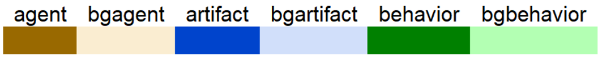
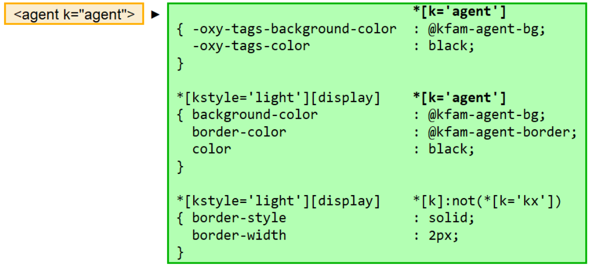
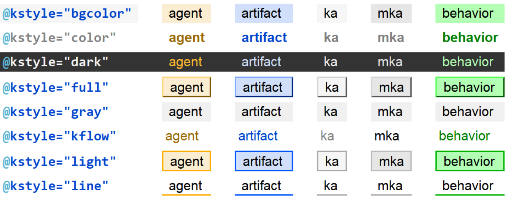

The kfam visual language starts with colors. Named colors are defined with HSL values and variables in LESS stylesheets. The names are defined for use as attribute values in prodoc.dtd so that they can be applied to @color and @bgcolor using picklists. One of the color pallets is for modeling knowledge flows.
Figure 22. Named foreground and background colors
|  |
Another attribute, @kstyle, applies <kfam/>visualizations to any element. @kstyle accepts the values (bgcolor| color| custom| dark| full| gray| kflow| light| line| none). It applies background, foreground, and border color combinations based on the value of the @k attribute, which describes the element's role in knowledge flows. prodoc.dtd sets default @k attribute values for most spans, which can be overwritten to lie to the author, e.g., agent/@k="behavior", would create a secret <agent/> camouflaged to look like a <behavior/>.
Figure 23. @k → @kstyle CSS style mappings
|  |
Figure 24. @kstyle variations applied to a table
|  |